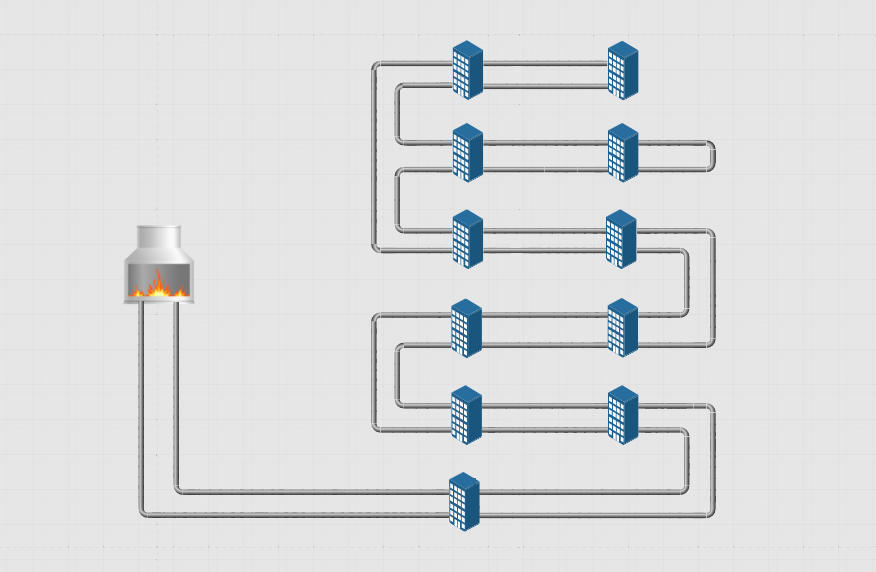

<!DOCTYPE html>
<html lang="en" class="no-js">
	
<head>
<meta charset="UTF-8" />
<meta http-equiv="X-UA-Compatible" content="IE=edge"> 
<meta name="viewport" content="width=device-width, initial-scale=1">
<link rel="stylesheet" href="../static/layui/css/layui.css">
<link rel="stylesheet" type="text/css" href="../static/css/schooleOne.css" />
<!-- <link rel="stylesheet" href="//res.layui.com/layui/dist/css/layui.css"  media="all"> -->
<title>login</title>
<style>
	#ceshi{
		color:lightpink;
		/* width: 100px;
		height: 100px;
		background: url(../static/img/oo.png) no-repeat; */
	}
</style>
</head>
<body>
<section class="hero">
	<div id="view">
		
	</div>
</section>
<script src="../static/layui/layui.js"></script>
<script src="https://code.jquery.com/jquery-3.3.1.slim.min.js" integrity="sha384-q8i/X+965DzO0rT7abK41JStQIAqVgRVzpbzo5smXKp4YfRvH+8abtTE1Pi6jizo" crossorigin="anonymous"></script>
<script src="https://cdnjs.cloudflare.com/ajax/libs/popper.js/1.14.7/umd/popper.min.js" integrity="sha384-UO2eT0CpHqdSJQ6hJty5KVphtPhzWj9WO1clHTMGa3JDZwrnQq4sF86dIHNDz0W1" crossorigin="anonymous"></script>
<script src="https://stackpath.bootstrapcdn.com/bootstrap/4.3.1/js/bootstrap.min.js" integrity="sha384-JjSmVgyd0p3pXB1rRibZUAYoIIy6OrQ6VrjIEaFf/nJGzIxFDsf4x0xIM+B07jRM" crossorigin="anonymous"></script>
<script src="https://code.jquery.com/jquery-3.1.1.min.js"></script>
<!-- //第一步：编写模版。你可以使用一个script标签存放模板，如： -->
<script id="demo" type="text/html">
	<h3>{{ d.title }}</h3>
<ul>
{{#  layui.each(d.list, function(index, item){ }}
	<div id="views">
		<div class="zuotop">{{ item.deviceName }}</div>
		<div class="zuo">
			<div class="zuoimg"></div>
			<div class="zuodata">
				<ul>
					<li>阀门状态:{{ item.valveStatus }}</li>
					<li>冷水温度:{{ item.inletTemperature }}℃</li>
					<li>内管温度:{{ item.rewaterTemperature }}℃</li>
				</ul>
				<ul>
					
					<li>设备状态:{{ item.zhuangtai }}</li>
					<li>外管温度:{{ item.beiyiTemperature }}℃</li>
					<li>集热温度:{{ item.beierTemperature }}℃</li>
				</ul>
				<!-- <ul>
					<li>{{ item.deviceStatus }}℃</li>
					<li>{{ item.typeName }}</li>
					<li>{{ item.deviceHumidity }}℃</li>
				</ul> -->
			</div>
		</div>
	</div>
{{#  }); }}
 
{{#  if(d.list.length === 0){ }}
  无数据
{{#  } }} 
</ul>
        
  </script>
<!-- //第二步：建立视图。用于呈现渲染结果。 -->
<!-- [{"valveStatus":"关","inletTemperature":"30","rewaterTemperature":"60","deviceHumidity":"70","beiyiTemperature":"90","beierTemperature":"80","deviceStatus":"0","typeName":"温控器","deviceName":"温控器设备","zhuangtai":"关"}
,{"valveStatus":"关","rewaterTemperature":"60","deviceHumidity":"70","beiyiTemperature":"90","beierTemperature":"80","deviceStatus":"0","typeName":"温控器","deviceName":"温控器设备","zhuangtai":"关"}
,{"valveStatus":"关","inletTemperature":"30","deviceHumidity":"70","beiyiTemperature":"90","deviceStatus":"0","typeName":"温控器","deviceName":"温控器设备","zhuangtai":"关"}
,{"valveStatus":"关","inletTemperature":"30","rewaterTemperature":"60","beiyiTemperature":"90","deviceStatus":"0","typeName":"温控器","deviceName":"温控器设备","zhuangtai":"关"}
] -->
<!-- //第三步：渲染模版 -->
<script type="text/javascript">
	// 设置定时器
	var t1 = window.setInterval(repeat,1000);
	function repeat(){
		$.post('/device/getDeviceData',{"uuid":"8622d15dff814"},function (res) {
		// 开始解析
			layui.use('laytpl', function(){
			var laytpl = layui.laytpl;
			console.log(res.data);
			var data = { //数据
			"title":"温控器"
			,"list":res.data
			}
			var getTpl = demo.innerHTML
			,view = document.getElementById('view');
			laytpl(getTpl).render(data, function(html){
			view.innerHTML = html;
			});
			}); 
	        })
	}
	//去掉定时器的方法 
	// window.clearInterval(t1)
</script>
	</body>
</html>